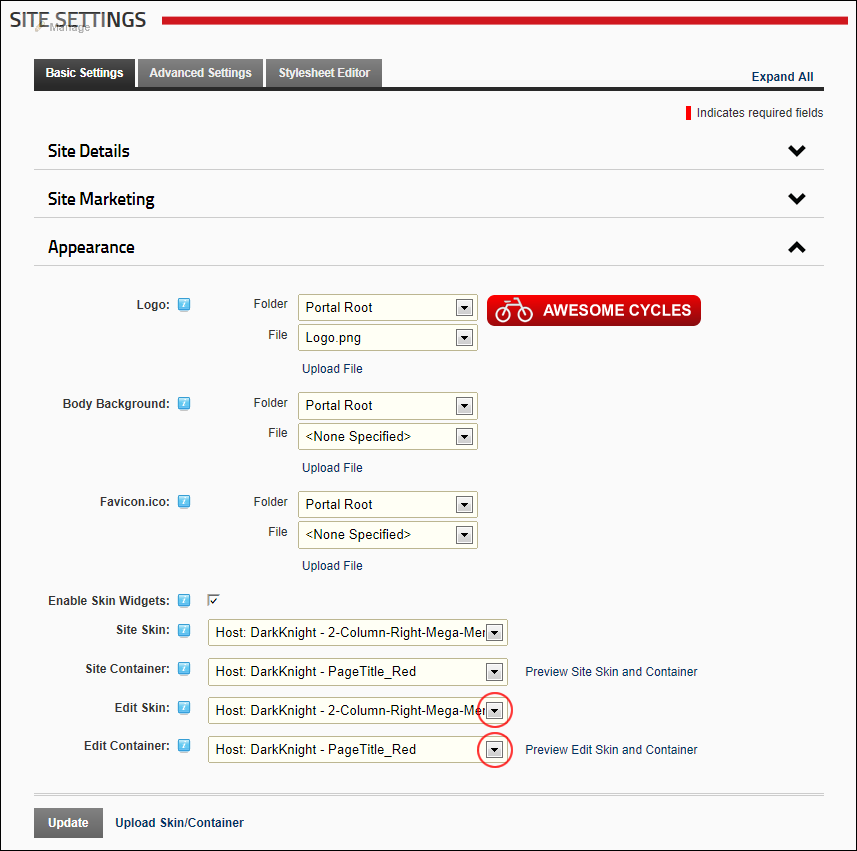

Setting the Edit Skin and Container
How to set the skin which is applied to the editing pages of the site and the container which is applied to the modules on those pages. E.g. module editing pages, module settings pages, page settings pages, etc.
Tip: Choose a skin and container with minimal design and images as it will load quickly into your Web browser and reduce the editing time.
- Navigate to Admin >
 Site Settings.
Site Settings.
- Optional. Click on the country flag icon associated with the culture (language) to be updated. This field only displays when multiple languages are enabled. See "Viewing a Site in a Secondary Language"
- Select the Basic Settings tab.
- Expand the Appearance section.
- At Edit Skin, select the required skin from the drop down list.
- At Edit Container, select the required container from the drop down list.
- Optional. Click the Preview Edit Skin and Container link to preview the selected skin and container in a new Web browser.

-
Click the Update button.
Related Topics:
-
See "Uploading a Site Skin and/or Container"